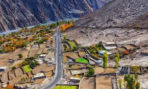
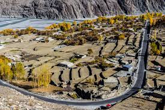
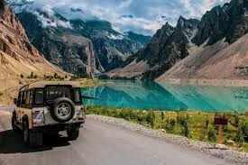
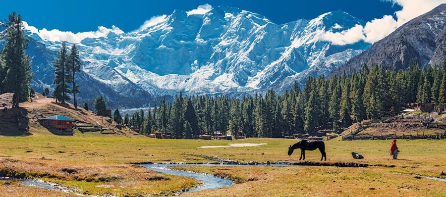

Gilgit, the scenic capital of Gilgit-Baltistan in northern Pakistan, is a breathtaking gateway to some of the world's highest peaks, including K2 and Nanga Parbat, nestled in the mighty Karakoram and Himalayan ranges. Known for its dramatic landscapes of rugged mountains, deep valleys, and crystal-clear rivers, the region is a paradise for trekkers, mountaineers, and nature lovers. Rich in cultural diversity, Gilgit is home to various ethnic groups such as the Shina, Balti, and Wakhi people, each with unique traditions, languages, and warm hospitality. The ancient Silk Road history, vibrant local bazaars, and stunning attractions like the Gilgit River and nearby Fairy Meadows make it a captivating blend of adventure, heritage, and untouched natural beauty.
   